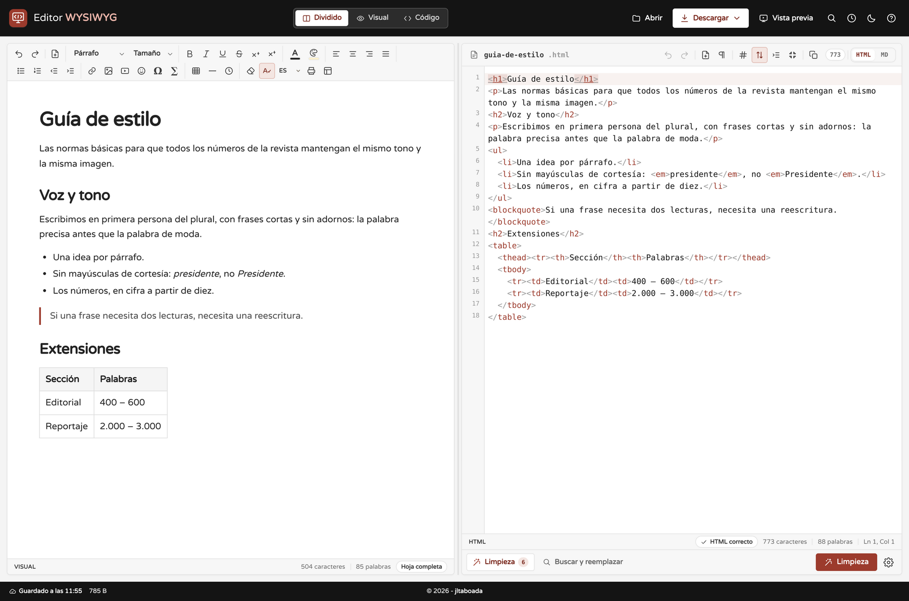

Un editor de HTML y Markdown que no te pone límites
Editor WYSIWYG es un editor de HTML y Markdown que funciona íntegramente en el navegador. No hay servidor, no hay cuentas y no hay instalación: abres la página, escribes y descargas tu documento. Todo lo que haces se queda en tu equipo.
Por qué lo hice
Llevo años usando editores HTML en línea y siempre acababa igual: peleándome con la herramienta en lugar de escribiendo.
- Unos te obligan a registrarte para poder descargar tu propio documento.
- Otros te devuelven un HTML imposible de leer, lleno de
<span>con estilos y clases heredadas de Word. - Casi ninguno mantiene el panel de código en sincronía real con lo que ves: cambias una palabra arriba y el código de abajo se queda como estaba.
- Si quieres escribir en Markdown, o no puedes, o pierdes todos los estilos al volver a HTML.
- Y muchos cargan anuncios, analítica y rastreadores en una página que, en teoría, solo sirve para escribir texto.
Estaba cansado de esas limitaciones, así que decidí hacerme mi propio editor: uno que hiciera bien lo que yo necesitaba y que no me obligara a nada. Este proyecto es el resultado.
El corazón: HTML y Markdown, sin perder nada
Lo que más me importaba era que el panel visual y el panel de código fueran el mismo documento, no dos vistas que se parecen.
- Sincronización real en los dos sentidos. Escribes en el panel visual y el código se actualiza en milisegundos; editas el código y el documento cambia al momento. Cada modo conserva su propio historial de deshacer y su posición del cursor.
- Código siempre ordenado. No hace falta pulsar «formatear»: lo que llega al panel de código ya viene indentado, y al pegar HTML también se ordena solo. Si comprimes el documento, se respeta hasta que vuelvas a editarlo.
- Dos lenguajes, un documento. El conmutador HTML | MD convierte el documento en Markdown y de vuelta. Con HTML incrustado activado, todo lo que Markdown no sabe representar (colores, tipografías, vídeos, fórmulas, tablas complejas) viaja dentro del Markdown y no se pierde; al desactivarlo obtienes Markdown estándar y limpio. También hay notas al pie y listas de tareas con casillas que se marcan en el panel visual.
- Una vista previa que funciona de verdad. Los enlaces se pueden pulsar, el CSS y las tablas se aplican, los vídeos y los formularios responden, y puedes alternar entre el ancho de escritorio y el de móvil. Los scripts siguen desactivados mientras editas, y solo se ejecutan si abres el documento en una pestaña nueva.
- Ecuaciones en LaTeX sin dependencias. Se escriben con el botón ∑ y se guardan como MathML: el HTML exportado muestra las fórmulas sin cargar ninguna librería.
Lo que no suele encontrarse en otros editores
- Formato de página real. A4, Carta, Legal y A5, en vertical u horizontal, con márgenes normales, estrechos, amplios, sin márgenes o personalizados en milímetros. La hoja del editor, la vista previa, el PDF y el HTML descargado usan ese mismo formato.
-
Revisión de HTML en vivo. Mientras escribes, el editor avisa de etiquetas sin
cerrar, cierres que no corresponden, atributos repetidos o en mayúsculas,
idduplicados, imágenes sinalt… y cada aviso te lleva a la línea y la columna exactas. - Historial de versiones. Guarda una versión cada 1, 2, 5, 10, 15 o 30 minutos (o solo cuando tú quieras), hasta 30, y puedes restaurar cualquiera de ellas con confirmación y deshacerlo con Ctrl+Z.
- Limpieza de HTML en 11 reglas. Estilos inline, clases, identificadores, etiquetas vacías, comentarios, atributos sobrantes, espacios repetidos, scripts… Pensada para el HTML que llega pegado de otras herramientas.
- Tablas e imágenes editables de verdad. Con el cursor dentro de una tabla aparece una barra para añadir o quitar filas y columnas; al seleccionar una imagen aparece un tirador para cambiar su tamaño manteniendo la proporción.
- Paleta de comandos con Ctrl+K. Las 49 acciones del editor en un buscador que ignora los acentos: escribe «tabla», «oscuro», «margenes» o «pdf» y pulsa Enter.
-
Todo local y sin compilar. No hay servidor, ni cuentas, ni anuncios, ni
rastreadores. Las librerías viajan dentro del proyecto, así que funciona incluso abriendo
index.htmlcon doble clic, sin conexión y sin instalar nada.
Todo lo demás
Además de lo anterior, el editor incluye limpiador y buscador con expresiones regulares (hasta
10 reglas guardadas), corrección ortográfica con selección de idioma, modo claro y oscuro, modo
enfoque (F11), impresión sin encabezados ni pies de página, y exportación a HTML,
Markdown, PDF, ZIP con las imágenes incrustadas y Word (.docx), además de
importación de .html, .md, .docx y .txt.
Para escribir hay 1.898 emoticonos con buscador en español, 300 caracteres especiales en siete
categorías, inserción de vídeo de YouTube, Vimeo y Dailymotion, líneas horizontales, fecha y
hora en seis formatos y texto de relleno. Y el borrador se guarda solo: al cerrar y volver,
siguen ahí el documento, el nombre, la vista, la división de los paneles, el tema y hasta el
idioma del corrector.
Es para todo el mundo
Puedes usarlo ahora mismo, sin registrarte, en jltaboada.github.io/wysiwyg.
Y el código está en GitHub, en github.com/jltaboada/wysiwyg. Cualquiera puede clonarlo, estudiarlo y modificarlo a su gusto:
git clone https://github.com/jltaboada/wysiwyg.gitEs una web estática, así que no hace falta compilar, ni instalar dependencias, ni montar un servidor: se abre la carpeta y funciona. Si quieres tu propia copia en línea, puedes publicarla en GitHub Pages, Netlify, Vercel, Cloudflare Pages o cualquier servidor, sin cambiar una línea.
Si encuentras un fallo, se te ocurre una mejora o quieres contar cómo lo usas, abre una issue en el repositorio. Lo hice para mí, pero si a ti te sirve, mejor todavía.